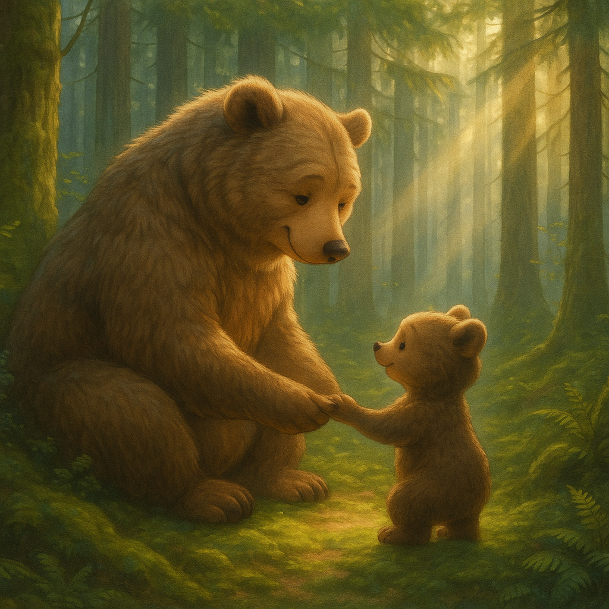
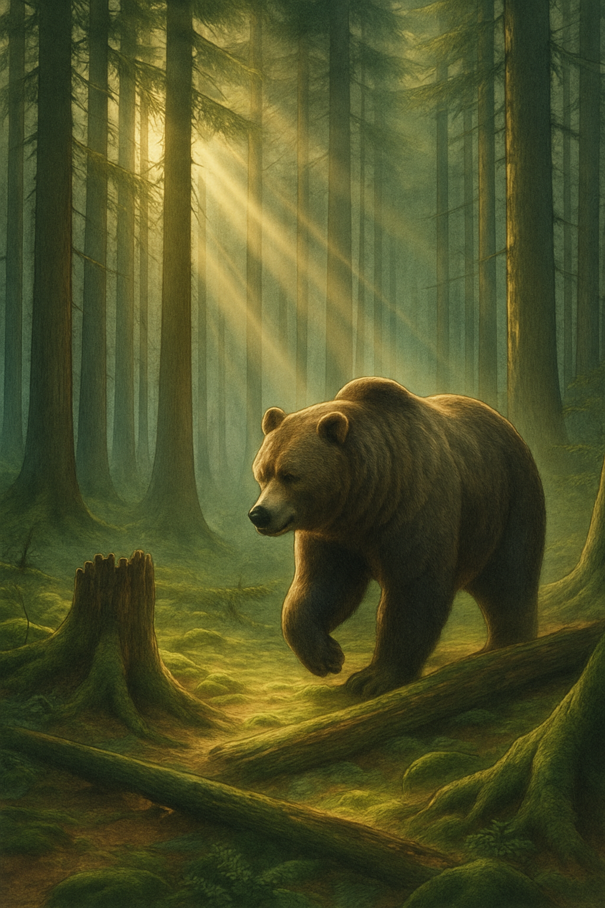
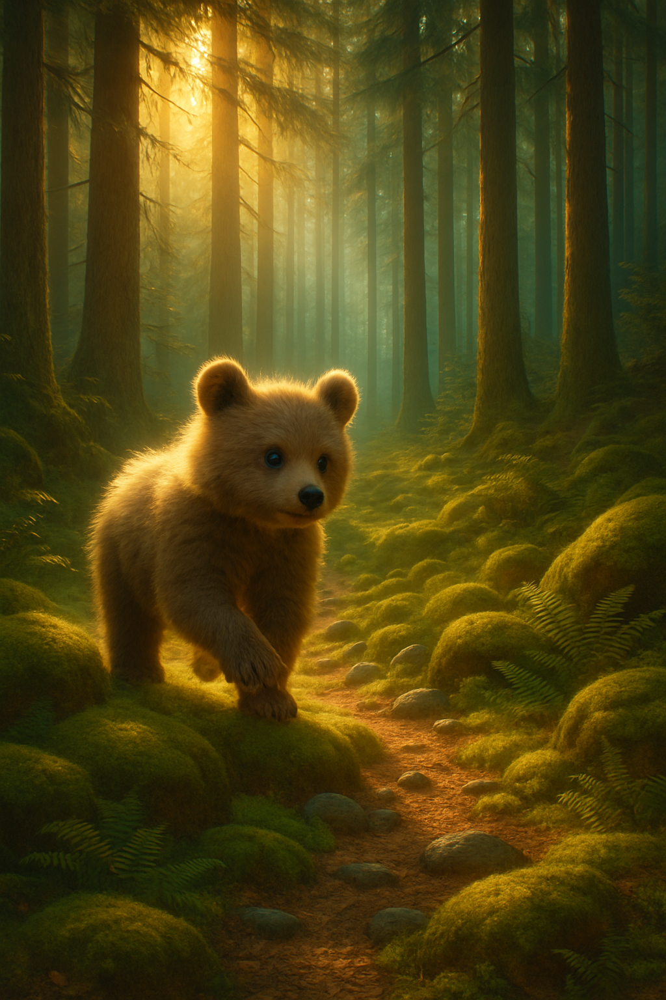
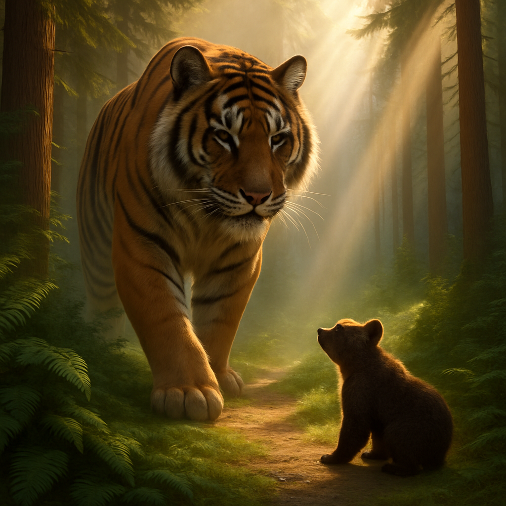
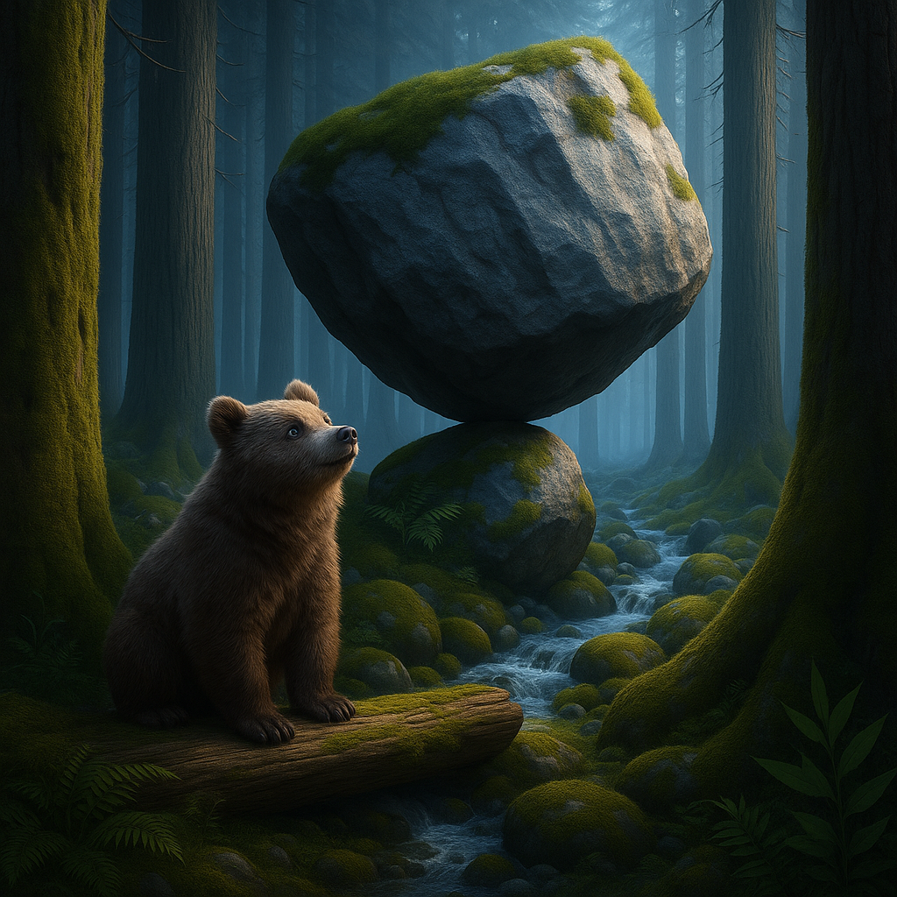
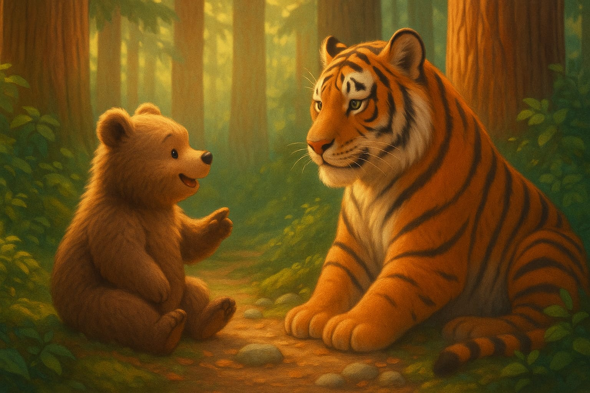
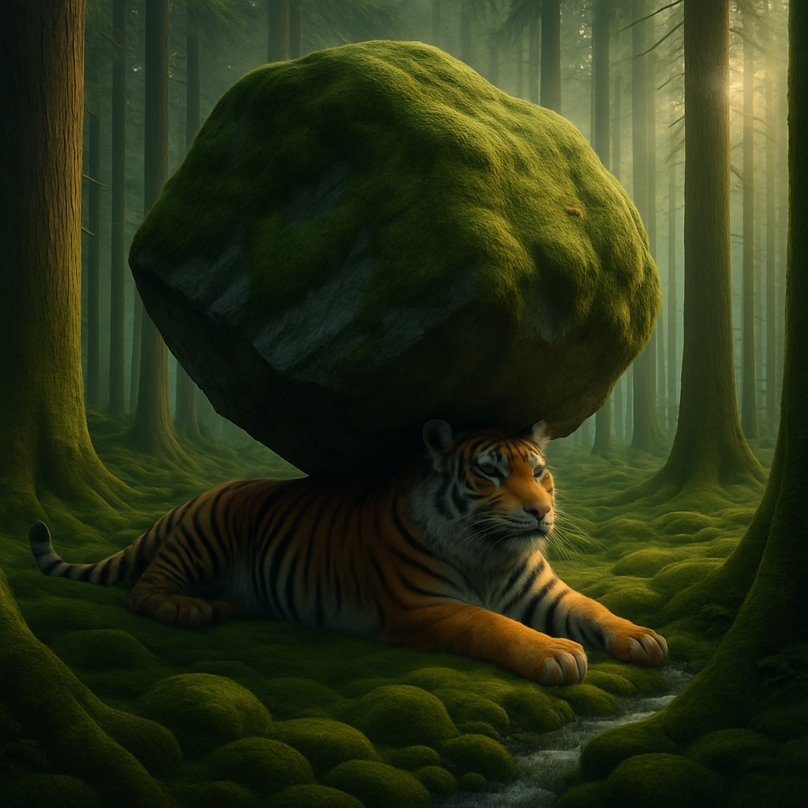
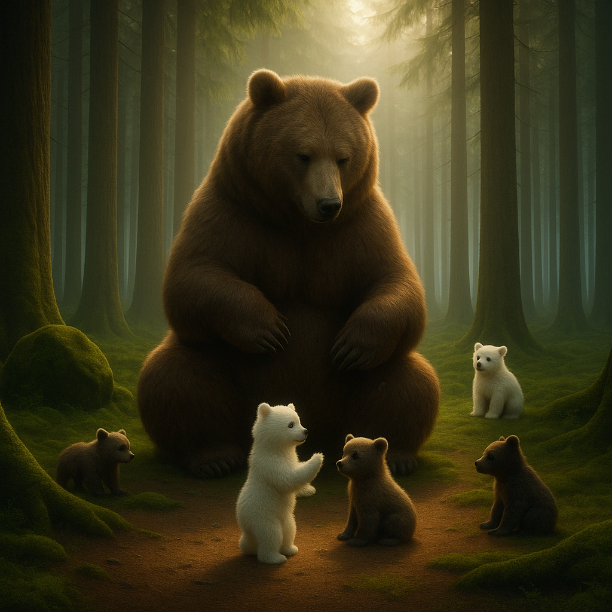

ஒரு மிக பெரிய மலைக்கு பக்கத்துல இருந்த காட்டுல ஒரு கரடி வாழ்ந்துகிட்டு வந்துச்சு
அந்த கரடிக்கு ஒரு குட்டி கரடி மகன் இருந்துச்சு ,அந்த குட்டி கரடி எப்பவும் சுட்டித்தனம் செஞ்சுக்கிட்டே இருக்கும் இருந்தாலும் அந்த பெரிய கரடி நீ புத்திசாலியா இருக்க அதனால நீ எந்த ஆபத்துல இருக்குறப்ப கூட உன்னோட புத்தி சாலித்தனத்தை பயன் படுத்தி அந்த இடத்தில இருந்து தப்பிச்சிட முடியும் அதனால எப்பவும் புத்திசாலித்தனமா யோசிச்சு நடந்துக்கணு சொல்லுச்சு
ஒருநாள் உணவு தேடி பெரிய கரடி காட்டுக்குள்ள போச்சு ,அப்ப அந்த குட்டி கரடிக்கு ரொம்ப போர் அடிச்சிச்சு உடனே தானும் காட்டுக்குள்ள போய் பார்த்தா என்னானு தோணுச்சு குட்டி கரடிக்கு ,உடனே மெதுவா நடந்து காட்டுக்குள்ள போக ஆரம்பிச்சுச்சு கரடிகாட்டுக்குள்ள போன குட்டி கரடி சுட்டித்தனமா எல்லா பாறையிலயும் ஏறி குதிச்சி விளையாடுச்சு ,அப்ப திடீருனு ஒரு உறுமல் சத்தம் கேட்டுச்சு
பயந்துபோன குட்டி கரடி சத்தம் வந்த பக்கம் போய் பாத்துச்சு,அங்க ஒரு பெரிய புலி குட்டி கரடிய பார்த்து சிரிச்சிச்சு உடனே பயந்துபோன குட்டி கரடி என்ன சாப்பிட போறீங்களானு கேட்டுச்சு கரடி ,உடனே புலி சொல்லுச்சு கண்டிப்பா கரடி கரி சாப்பிட்டு ரொம்பநாள் ஆச்சு அதனால நீதான் எனக்கு இன்னைக்கு மதிய உணவுனு சொல்லுச்சு.
இத கேட்ட குட்டி கரடிக்கு பயமா இருந்தாலும் அதுக்கு “எந்த சூழ்நிலையில இருந்தாலும் புத்திசாலி தனத்தை பயன்படுத்தினா தப்பிச்சிடலாம்னு ” அவுங்க அப்பா சொன்னது ஞாபகத்துக்கு வந்துச்சு
உடனே தைரியத்தை வர வச்சிக்கிட்டு குட்டி கரடி சுத்தி முத்தியும் பார்த்துச்சு ,அப்பத்தான் அவுங்க ஒரு பாறைக்கு பக்கத்துல நிக்கிரதையும் ,அந்த பெரிய பாறை ஒரு சின்ன பாறையில் முட்டி நிக்கிரதையும் பார்த்துச்சு அந்த குட்டி பாறைய எதுட்டா அது அவுங்கள நசுக்கிடும்கிறதையும் புரிஞ்சிகிடுச்சு குட்டி கரடி ,எப்படியாவது இந்த சின்ன பாறையை பிடிச்சி இழுத்தம்னா அது அந்த புலி மேல விழுந்து அமுக்கிடும் நாம தப்பிச்சிடலாம்னு நினச்சுச்சு
ஆனா அந்த சின்ன பாறையை தன்னால இழுக்க முடியாது அதுக்கு தனக்கு பலமும் இல்லைங்கிறத புரிச்சிக்கிடுச்சு குட்டி கரடி அப்பத்தான் அந்த புத்திசாலியான குட்டி கரடிக்கு ஒரு புது யோசனை வந்துச்சு ,உடனே புலிகிட்ட கேட்டுச்சு உங்களுக்கு ரொம்ப பெரிய பலம் இருக்காமேனு அதுக்கு அந்த புலி சொல்லுச்சு ஆமாம் இந்த காட்டுல சிங்கராஜா ,யானைக்கு அப்புறம் எனக்குதான் பலம் அதிகம்னு சொல்லுச்சு ,இத கேட்ட கரடி சொல்லுச்சு நான் இன்னைக்கு உங்களுக்கு சாப்பாடா மாறுனதுல ரொம்ப சந்தோசம் ,என்ன எப்படியும் நீங்க சாப்பிட போறீங்க இருந்தாலும் எனக்கு உங்க பலத்தை காமிங்க எனக்கு ரொம்ப ஆசையா இருக்குனு சொல்லுச்சு
உடனே புலி சொல்லுச்சு என்ன செஞ்சு என்னோட பலத்தை நிரூபிக்கிறது இந்த மரத்தை அடிச்சி உடைக்கட்டுமான்னு கேட்டுச்சு அத நானே செஞ்சுடுவேனே இங்க பாருங்க இந்த பெரிய பாறை இத தூக்குங்க பாக்கலாம்னு சொல்லுச்சு ,அதுக்கு புலி சொல்லுச்சு இது இந்த உலகத்துல இருக்குற யாராலயும் முடியாது ,என்னால செய்ய முடிஞ்ச வேற எதாவது சொல்லு நான் செய்யிறேன்னு சொல்லுச்சு
அப்ப அடியில இருக்குற அந்த சின்ன கல்லயாவது தூக்குங்கனு சொல்லுச்சு ,உடனே அந்த புலி அந்த சின்ன கல்ல அசச்சுச்சு ,உடனே அதுக்கு மேல முட்டிகிட்டு நின்ன பெரிய பாறை புலி மேல விழுந்து நசுக்கிடுச்சு இத எதிர்பார்த்து நின்னுகிட்டு இருந்த குட்டி கரடி டக்குனு அடுத்த பக்கம் ஓடி தப்பிச்சிடுச்சு , கொஞ்ச நேரத்துக்கு அப்புறமா அத தேடி அவுங்க அப்பா பெரிய கரடி வந்துச்சு
நடந்தத எல்லாத்தையும் கேட்டு தெரிஞ்சிகிட்ட கரடி புத்திசாலியான தன்னோட மகனை ரொம்ப பாராட்டுனாறு